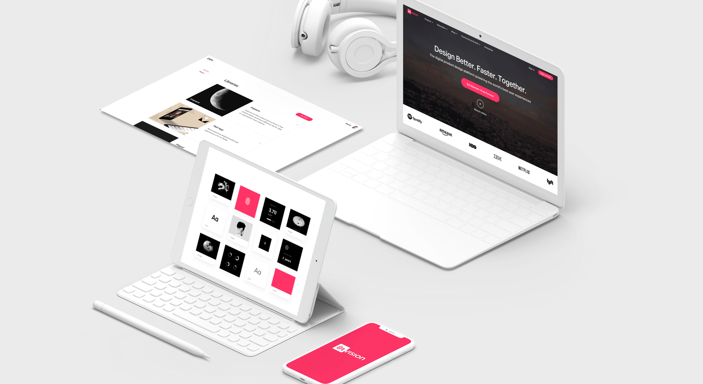
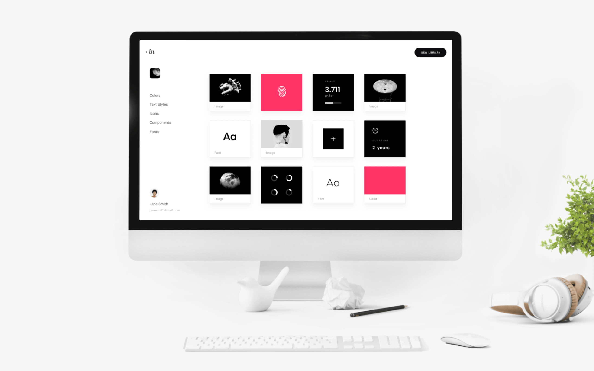
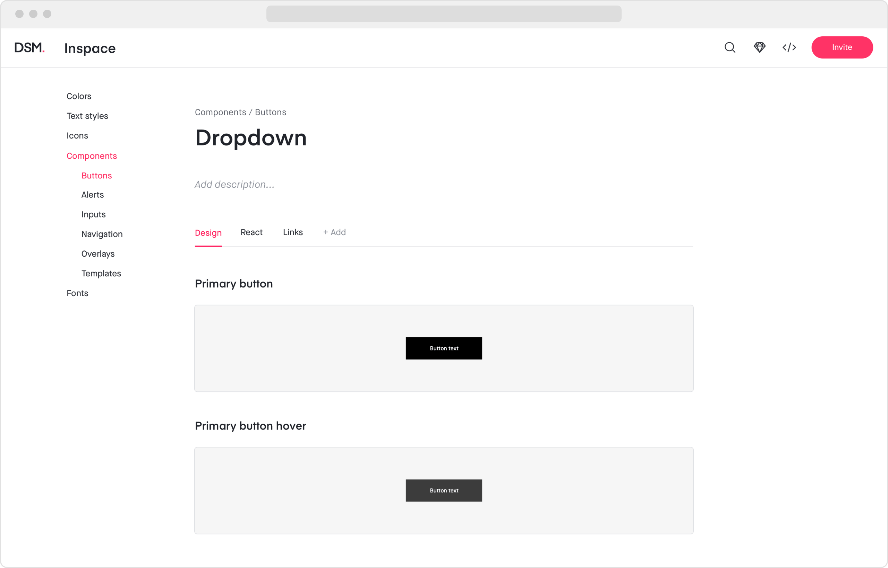
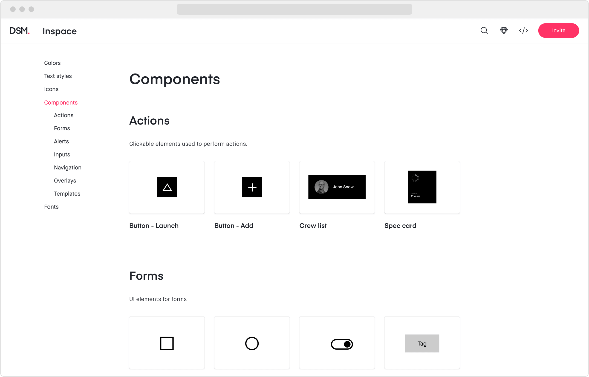
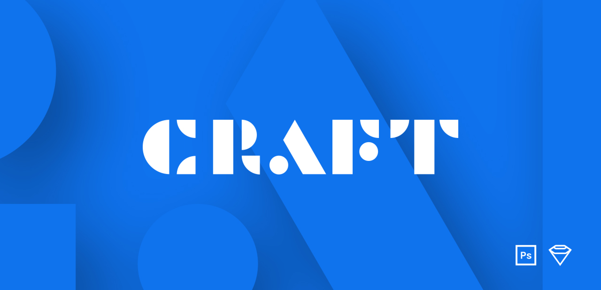
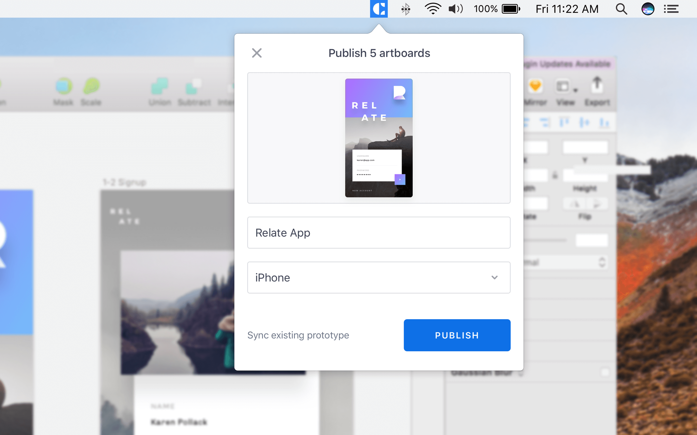
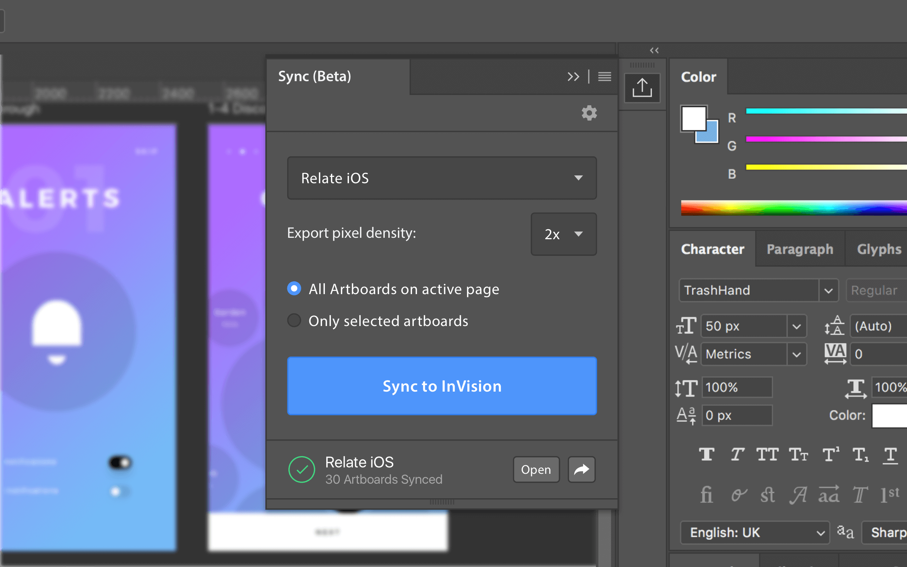
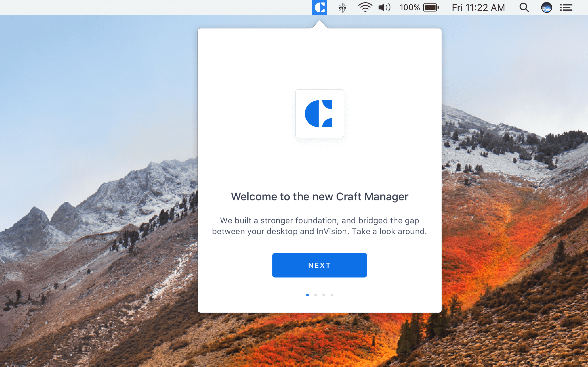

InVision
Digital product design, workflow &
collaboration

InVision
Founded in 2011, InVision is the digital product design platform powering the world’s best user experiences. InVision gives digital product teams everything they need to effortlessly navigate every stage of their process, from ideation, design, prototyping, and design management.
More than 5 million people use InVision to create a repeatable and streamlined design workflow; rapidly design and prototype products before writing code, and collaborate across their entire organization. That includes 100% of the Fortune 100, and brands like Airbnb, Amazon, HBO, Netflix, Slack, Starbucks and Uber.
InVision is a fully distributed company with employees in 25 countries around the world. The company has raised more than $350 million in funding from leading investors including Accel, ICONIQ, FirstMark, Tiger Global, Battery Ventures, and Spark Capital.
To comply with my non-disclosure agreement, I have omitted and obfuscated confidential information in this case study. All information in this case study is my own and does not necessarily reflect the views of InVision.
InVisionApp.com
History
I've joined the team at InVision in January 2016. This was the time when Photoshop was still the dominant design tool and InVision was the only tool on the market empowering designers to prototype their static designs as rapid prototypes without a single line of code. This was a huge innovation, as there were no other options on the market before that.
Soon after that Sketch entered the market and started to gain traction in the design space. A purpose based screen design tool, that completely disrupted the market. Yet InVision continued to hold the crown in the prototyping space as it added more features and started to move more into the enterprise territory as well as supporting Sketch files.
After that InVision launched Craft. A suite of plugins for Sketch and Photoshop. It took the market by storm. Essentially what it did, it granted superpowers in terms of plugins to the most popular and dominant design tools. Plugins included the ability to work with live data, incorporating stock photography, freehand for easy markup and the most import one, prototyping natively inside Sketch.
Couple of years later InVision announced the acquisition of Brand.ai, a leading platform for managing design systems and introduced InVision Design System Manager (DSM). The teams combined efforts have resulted in the definitive tool to help every product team create their own design system and innovate at scale like the world’s most design-forward companies.

Design System Manager (DSM)
InVision Design System Manager (DSM) is the perfect home for any organization's design system. It provides a space to create and maintain a shared visual language, bringing designers, developers, and stakeholders into a unified workflow.
Overview
Every digital business faces a crucial challenge when they begin to scale—how to ship better products, faster, while still creating consistent user experience on every screen. It's incredibly hard to do.
In 2017 InVision acquired Brand.ai, a leading platform for managing design systems, and introduced InVision Design System Manager (DSM). The teams combined efforts have resulted in the definitive tool to help every product team create their own design system and innovate at scale like the world’s most design-forward companies.
InVision DSM made it possible for every product team to create and maintain a design system at scale—allowing teams to maintain a consistent user experience across every digital interface. The company’s design language and library can now be managed and shared from the InVision platform—and accessed and updated in design tools such as InVision Studio and Sketch, as well as a web view.
My Role
I have joined the DSM team in the early stages of the acquisition, before the official public announcement in October 2017. At the time the term "design system” slowly started to circulate around the design industry, which has later become a trend that couldn't be ignored. The opportunity to be part of a team that builds the tool to help product teams create their own design systems, became a fundamental and essential learning curve into the world of design systems.
As a designer I worked alongside product managers, engineers, customer facing team and many other who contributed to the DSM.
I worked with project managers to uncover insights into customer needs and goals, balanced business goals and prioritized features for launch and beyond.
I created frameworks and prototypes to share the vision, design principles and content strategy. I helped realize ideas, gain alignment and drive decision making.
I designed and presented work to gain buy-in from stakeholders and executives and many other internal teams through the lifecycle of the project.
I lead multiple team and cross-team initiatives, drove conversations and found opportunities to move beyond the defined role and executed beyond planed vision.
I lead the majority of the core web experience, building out large-scale interaction patterns for how users add content to documentation and customize the site’s look and feel.
I worked closely with engineers to improve the collaboration process between designers and developers, make sure they use a common shared language and vocabulary and that the designs and features are implemented correctly.


New DSM
To deliver on our customer expectations we have redesigned InVision Design System Manager (DSM). After doing a more thorough market analysis, understanding customer needs and gathering feedback we have redefined our product goals. New DSM brings a lot new compatibilities with Sketch libraries, allows for a more flexible and rich custom documentation and delivers on better performance improvements and long-term stability.
Meet the new InVision DSM
Craft
In 2016 InVision built a "separate" venture InVision LABS to help the team grow and create products to build a better future for their users. This is how Craft was born. A free suite of plugins for Sketch and Photoshop that took the market by storm.
What Craft essentially did, was granting superpowers in terms of plugins to the most popular and dominant design tools. Plugins included the ability to work with live data, incorporating stock photography, freehand for easy markup and the most import one, prototyping natively inside Sketch.
Official Craft video

My Role
I've joined the Craft team in the early release stages and helped shaped and drive some of the user experiences behind Craft Sync, Craft Prototyping and Craft Manager.
I worked alongside product managers, designers and developers. I created frameworks, prototypes, conducted research and drove design sprints.
I lead the Craft team as a product manager for a period of two months. A opportunity that was very influential and valuable in terms of insights into role of product manager. How to drive the product, the team and meeting both the user and business goals.
Craft Sync
The Craft Sync plugin enables user to sign in to the InVisionApp account in order to create new InVision prototypes and upload screens, assets and metadata from their Sketch and Photoshop design documents.
Craft Sync provides a more faster, integrated and more reliable way of sending design files rom the design tool to InVision. This enabled users a more frequent and integrated syncing experience that did not obstruct the designers workflow.


Before Craft Sync and the plugin integration a lot of the syncing and extraction of Sketch and Photoshop files happened on the server-side and not client-side. Such process involved too many risks, a lot of latency and sometimes even a down time. To make InVision look like part of the workflow and provide the best experience for our customers with perfect fidelity experience, the syncing and extraction has been moved to the client-side.
Craft Sync provides a more faster, integrated and more reliable way of sending design files rom the design tool to InVision. This enabled users a more frequent and integrated syncing experience that did not obstruct the designers workflow.
Most of the product development on Craft Sync was done using agile approach and all the features and development were adjusted based on the learnings on customers, emerging behaviors and newfound opportunities.
